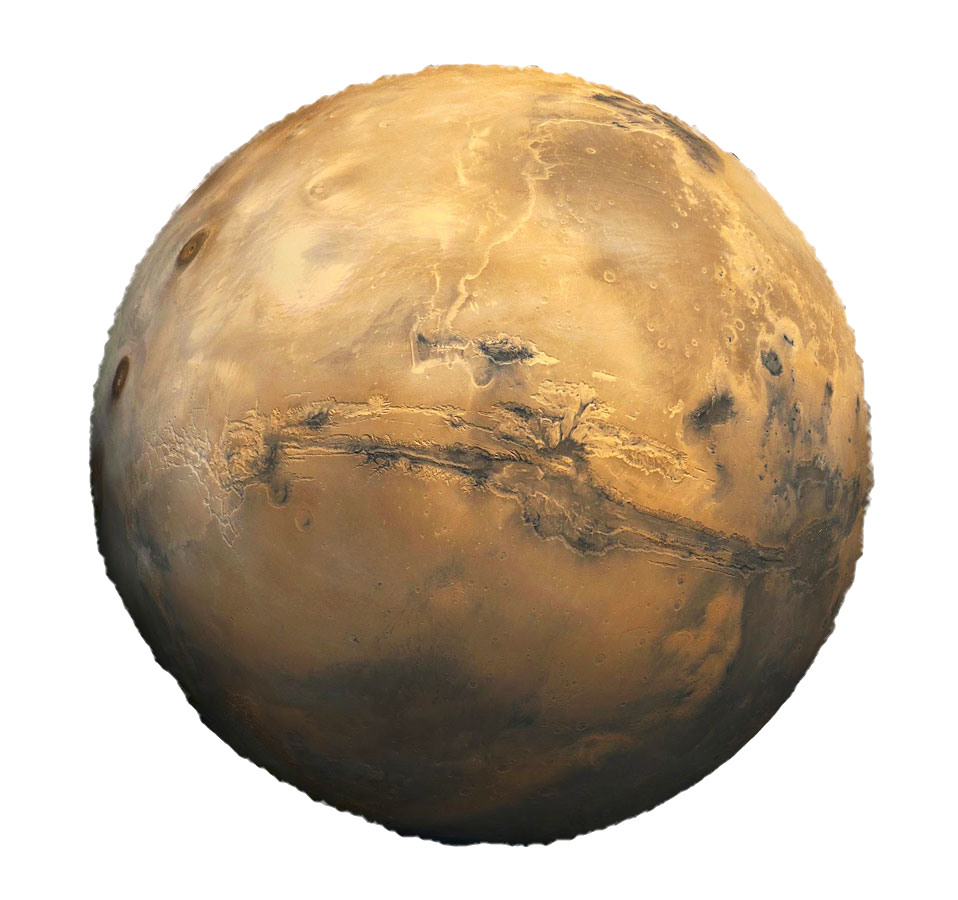

Volver
|  |
DefiniciónMarte, el planeta Rojo. Rojo como la sangre, rojo como el óxido de hierro que tiñe su superficie. Así, no resulta extraño que el planeta Marte reciba su nombre en honor a Ares, el dios griego de la guerra. Más tarde los romanos lo bautizaron, tal y como ocurre con el resto de los planetas, con el equivalente en su mitología para los dioses griegos, en este caso Marte. Características principales de MarteMarte, también conocido como el planeta Rojo, es el más alejado del Sol de los cuatro planetas rocosos del sistema solar, y el segundo más cercano a la Tierra, aunque cuenta aproximadamente con solo la mitad de su tamaño. Se trata de un planeta sencillo de identificar en el firmamento nocturno debido al brillo rojizo que hace honor a su nombre. Pese a lo que pudiera parecer por su rojo color, Marte no es planeta cálido. Muy al contrario, en la actualidad se trata de un planeta seco, rocoso, inhóspito y frío, algo que no exime al planeta de haber albergado unas condiciones pasadas en las que la vida hubiera sido posible. Así, se cree que en el pasado Marte fue un mundo más cálido cubierto de agua, motivo por el que los científicos no cesan en su empeño de encontrar signos de vida pretérita. De hecho, en Marte podemos encontrar agua a día de hoy, no obstante la atmósfera marciana es demasiado delgada para que exista agua líquida por mucho tiempo en la superficie, por lo que la mayor parte del agua marciana se encuentra en forma de hielo debajo de la superficie, en las regiones polares. Además, al igual que la Tierra, en Marte también se suceden las estaciones, pero estas duran más que aquí, ya que Marte tarda casi más del doble de tiempo que nuestro planeta en orbitar alrededor del Sol. Marte también tiene dos lunas pequeñas e irregulares llamadas Fobos y Deimos, ambas nombradas en honor a los hijos del dios Ares en la mitología griega, y de las cuales se piensa que pueden ser asteroides capturados por la gravedad del planeta Rojo. Estructura interna, geología y composición de MarteMarte es el planeta rocoso más alejado del Sol y con tan solo la mitad de la masa de la Tierra, el segundo en tamaño del sistema solar, después de Mercurio. Al igual que nuestro planeta, posee un núcleo metálico compuesto principalmente de hierro, níquel y azufre que podría oscilar entre los 1.500 y 2.100 kilómetros de radio. Este estaría rodeado por un manto rocoso de entre 1.200 y 1.800 kilómetros, y en su parte más exterior de una corteza de hierro, magnesio, aluminio, calcio y potasio que en su zona de mayor espesor alcanza los 50 kilómetros de profundidad. Aunque Marte es conocido como el planeta Rojo, una mirada cercana a su superficie revela una gama mucho más amplia de colores que van desde el dorado o beige, al tostado y el marrón. La razón por la que se percibe su color rojizo es debido a la oxidación del regolito marciano rico en minerales de hierro, es decir, la fina capa de suelo polvoriento que se eleva hacia la atmósfera y hace que veamos el planeta en su característica tonalidad. Hace poco también, los científicos demostraron que Marte es un planeta geológicamente activo en el que se han identificado martemotos -el equivalente marciano a los terremotos- y aunque muy débil, también un campo magnético que indica que, al igual que en la Tierra, el núcleo metálico de Marte actuó como una dinamo dotando al planeta de un campo magnético. Además en Marte se encuentran también algunos de los accidentes geográficos más interesantes del sistema solar, como es el gran sistema de cañones de 4.800 kilómetros conocido como Valles Marineris o el Monte Olimpo, que con 22,5 kilómetros de altura es a su vez la montaña y el volcán más grande del sistema solar. En sus regiones polares, cabe destacar que Marte es rica en agua, aunque esta se encuentra en forma de hielo debajo de la superficie, y ocasionalmente con el transcurso de las estaciones puede fluir por las laderas de algunos de los cráteres del planeta. La atmósfera de MarteCompuesta principalmente de dióxido de carbono, nitrógeno y argón, Marte cuenta con una fina atmósfera. De hecho, la atmósfera de Marte es tan fina que apenas proporciona protección al planeta Rojo ante la radiación del Sol ni ante el impacto de meteoritos o asteroides, motivo por el que su superficie, al igual que la de la Luna, se encuentra salpicada de cráteres. La fina atmósfera de Marte es también responsable de la ausencia de efecto invernadero en el planeta y de sus cambiantes temperaturas, extremadamente frías, y que pueden oscilar entre los escasos 20ºC en la cara soleada del planeta, y los -153ºC en la umbría. Pese a la liviandad de la atmósfera marciana, en el planeta Rojo también pueden producirse ocasionalmente fuertes vientos que pueden dan lugar a tormentas de polvo. Este polvo, debido a la menor gravedad que experimentaríamos en Marte puede permanecer en la atmósfera durante largos periodos de tiempo antes de volver a depositarse sobre la superficie. La exploración de MarteTras llegar a la Luna, y habida cuenta de las características poco amigables para el ser humano del planeta Venus, el próximo gran reto de la humanidad es alcanzar el planeta Marte. La carrera por llegar a Marte comenzó en el año 1964 con el lanzamiento de la sonda Mariner 4 de la NASA, la primera en enviar con éxito imágenes del planeta Rojo. En 1971, los rusos ponen por primera vez en la historia una nave en la órbita del planeta rojo, la Mars 3. Sin embargo, las misiones que popularizaron la exploración de Marte fueron las naves gemelas Viking I y II, a mediados de los años 70, las cuales obtuvieron las primeras imágenes detalladas de la superficie de Marte. La exploración de Marte se interrumpió durante más de dos décadas, en las que sólo se produjeron intentos fallidos o logros parciales hasta el lanzamiento de la Mars Global Surveyor, que entró en órbita en el año 1997, mismo año que la sonda Mars Pathfinder alcanzó la superficie del planeta Rojo. Desde el año 2000 varias son las misiones que han alcanzado Marte con éxito. Entre algunas de las más notables destacan la Mars Odyssey (2001) y Mars Express (2003). También en el año 2003 se lanzaron los vehículos todoterreno Spirit y Opportunity. En 2005, la Mars Reconnaissance Orbiter se situó en la orbita marciana y en 2011 entró en escena el rover Curiosity, que actualmente se halla a la búsqueda de vida microbiana. Entre otras misiones lanzadas por diversos países, en la actualidad una de las mas importantes es la misión Mars 2020, la cual puso en el planeta rojo al rover Perseverance y un pequeño helicóptero llamado Ingenuity. Entre los futuros objetivos de diversas agencias espaciales se encuentra el de enviar humanos a Marte para finales de la década de 2030 o principios de 2040. Curiosidades sobre el planeta Marte
|
Fuente: National Geographic
Volver